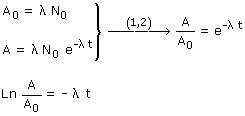
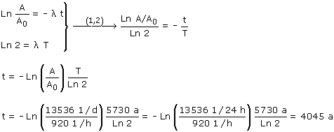

|
Cuando el árbol murió, 1 g de carbono de sus tejidos contenía N0 átomos de carbono C-14, la misma cantidad que contiene hoy 1 g de C de tejido vegetal. La actividad correspondiente es: A0 = λ·N0 Al cabo de un tiempo t (Tiempo transcurrido hasta hoy), en 1 g de carbono de tejido quedan N átomos de C-14. La actividad correspondiente será: A = λ·N = λ·N0·e-λ·t Combinando las dos expresiones de la actividad:  Utilizando la relación entre λ y T nos queda:  El árbol murió hace 4045 años |